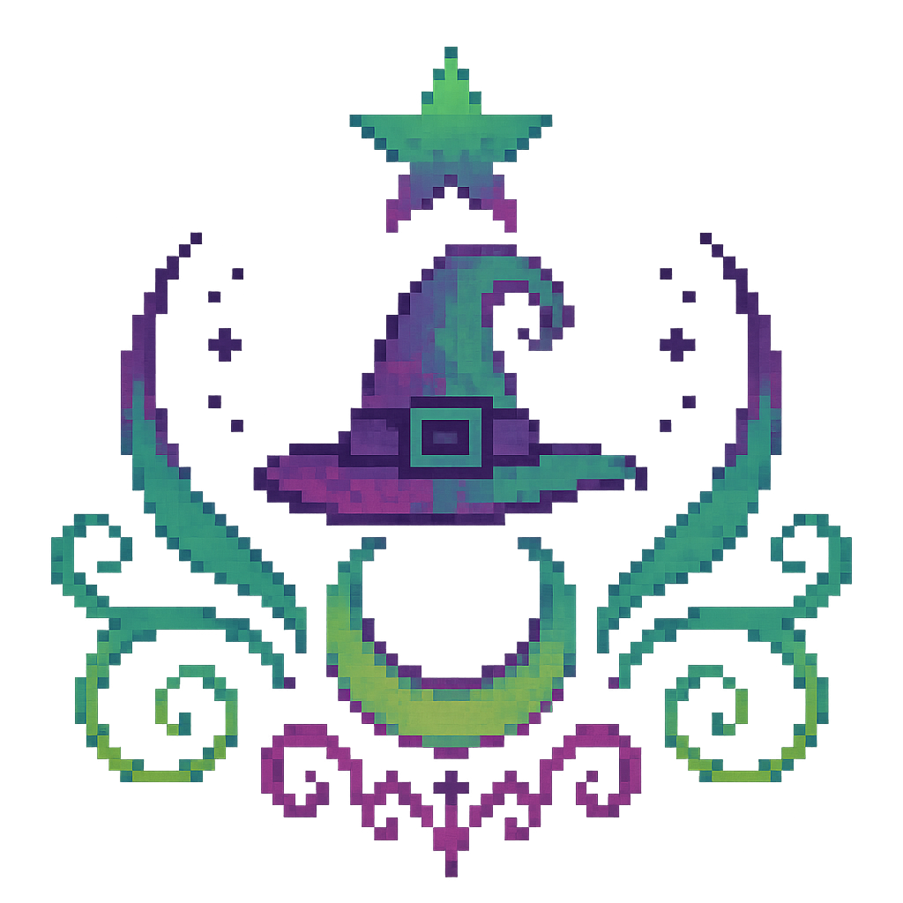

🌟 Aurora OS • MysticSoft - Ícones Pixel Art 🌟

AstroMágick
Portal astrológico com caldeirão místico, estrela e ornamentos mágicos
Witch.TV
TV retrô com antena para streaming místico e canais esotéricos
AFAST!
Escudo heráldico colorido para assistente de fala e notificações
Livros Interativos
Grimório com caveira dourada para biblioteca mística
MysticSoft
Logo da empresa com símbolos esotéricos e elementos místicos
🎵
Aurora Player
Reprodutor místico (ícone emoji temporário)